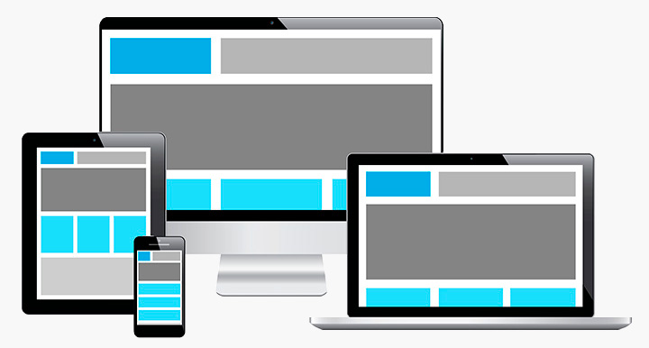

| ¿Qué es el Diseño web responsivo? | ¿En qué consiste? | ¿Cómo funciona? | Diferencias entre el Diseño web responsivo y el Diseño web adaptativo | Ventajas y desventajas |
¿En qué consiste?

Según Friedman, V. (2011) “Consiste en una combinación de cuadrículas y diseños flexibles, imágenes y un uso inteligente de consultas de medios CSS. A medida que el usuario cambia de su computadora portátil a iPad, el sitio web debe cambiar automáticamente para adaptarse a la resolución, el tamaño de la imagen y las capacidades de secuencias de comandos”.

Para conocer más en que consiste haz click en el siguiente video